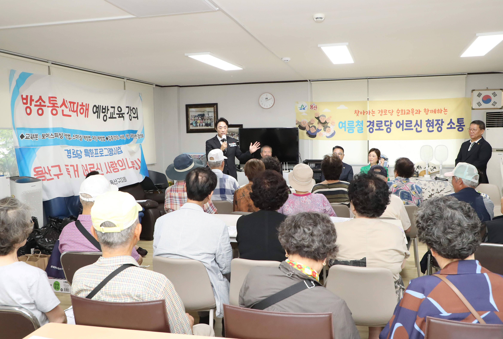
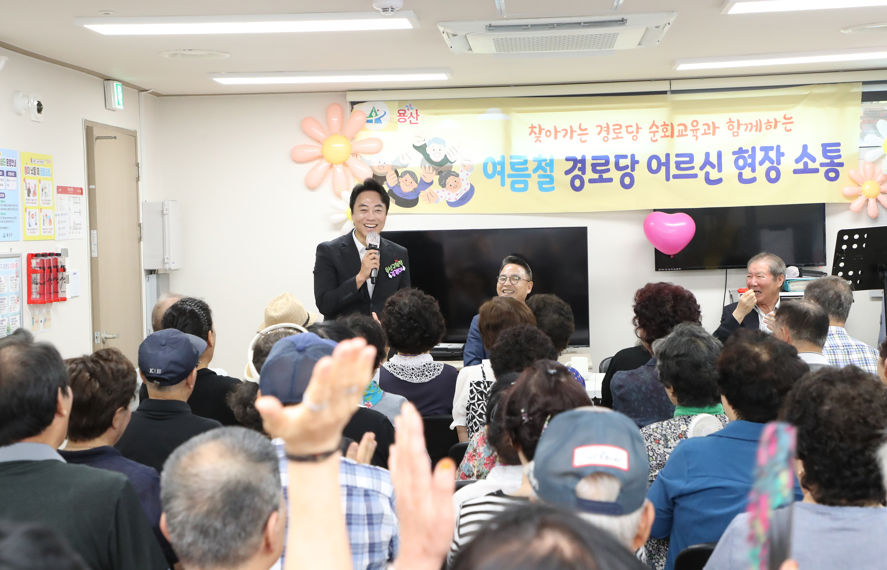

용산구, 거점경로당 순회교육 성료…어르신 500명 맞춤 교육
16개 동 거점경로당, 치매·사기예방 등 맞춤 교육 성료


[시사포커스 / 김재록 기자] 서울 용산구(구청장 김경대)는 관내 어르신들의 안전한 일상 지원과 경로당 운영 역량 강화를 위해 추진한 '2026년 거점경로당 순회교육'을 성황리에 마무리했다고 3일 밝혔다. 이번 교육은 (사)대한노인회 용산구지회 주관으로 지난 7월 10일부터 31일까지 관내 16개 동 거점경로당에서 진행됐으며, 지역 내 91개 경로당 회장과 총무 등 어르신 500여 명이 참석했다.
교육은 어르신들의 눈높이에 맞춰 실생활에 도움이 되는 내용으로 구성됐다. 주요 내용은 ▲치매 예방 운동과 예방수칙 ▲보이스피싱 등 금융사기 예방 ▲노인 인권 보호 및 학대 예방 ▲교통안전 수칙 ▲경로당 회계와 운영 규정 교육 등이다. 교육에 참여한 한 경로당 회장은 "보이스피싱 예방법과 치매 예방 운동을 쉽고 재미있게 배울 수 있었고, 경로당 회계 처리도 명확하게 이해할 수 있어 많은 도움이 됐다"고 밝혔다. 교육과 함께 대한노인회 용산구지회가 준비한 계란과 김, 밑반찬 등 지원 물품도 함께 전달해 어르신들의 건강한 여름나기를 응원했다.
김경대 용산구청장은 "이번 교육은 어르신들의 건강과 안전을 지키고 경로당 운영의 전문성을 높이는 계기"였다며 "앞으로도 어르신들이 안심하고 이용할 수 있는 경로당 환경을 만들고, 현장 중심의 맞춤형 지원을 지속적으로 확대해 나가겠다"고 말했다. 용산구는 이번 순회교육을 통해 파악된 어르신들의 현장 수요를 바탕으로 경로당 맞춤형 복지 지원을 더욱 강화해 나갈 방침이다.